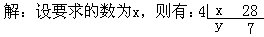

二、例题
例1 用一个数去除30、60、75，都能整除，这个数最大是多少？
分析 ∵要求的数去除30、60、75都能整除，
∴要求的数是30、60、75的公约数。
又∵要求符合条件的最大的数，
∴就是求30、60、75的最大公约数。
解：∵
（30，60，75）=5×3=15
这个数最大是15。
例2 一个数用3、4、5除都能整除，这个数最小是多少？
分析 由题意可知，要求的数是3、4、5的公倍数，且是最小的公倍数。
解：∵［3，4，5］=3×4×5=60，
∴用3、4、5除都能整除的最小的数是60。
例3 有三根铁丝，长度分别是120厘米、180厘米和300厘米.现在要把它们截成相等的小段，每根都不能有剩余，每小段最长多少厘米？一共可以截成多少段？
分析 ∵要截成相等的小段，且无剩余，
∴每段长度必是120、180和300的公约数。
又∵每段要尽可能长，
∴要求的每段长度就是120、180和300的最大公约数.
（120，180，300）=30×2=60
∴每小段最长60厘米。
120÷60+180÷60+300÷60
=2＋3＋5=10（段）
答：每段最长60厘米，一共可以截成10段。
例4 加工某种机器零件，要经过三道工序.第一道工序每个工人每小时可完成3个零件，第二道工序每个工人每小时可完成10个，第三道工序每个工人每小时可完成5个，要使加工生产均衡，三道工序至少各分配几个工人？
分析 要使加工生产均衡，各道工序生产的零件总数应是3、10和5的公倍数.要求三道工序“至少”要多少工人，要先求3、10和5的最小公倍数。
［3，10，5］=5×3×2=30
∴各道工序均应加130个零件。
30÷3=10（人）
30÷10=3（人）
30÷5=6（人）
答：第一道工序至少要分配10人，第二道工序至少要分配3人，第三道工序至少要分配6人。
例5 一次会餐供有三种饮料.餐后统计，三种饮料共用了65瓶；平均每2个人饮用一瓶A饮料，每3人饮用一瓶B饮料，每4人饮用一瓶C饮料.问参加会餐的人数是多少人？
分析 由题意可知，参加会餐人数应是2、3、4的公倍数。
解：∵[2，3，4]=12
∴参加会餐人数应是12的倍数。
又∵12÷2+12÷3+12÷4
=6+4+3=13（瓶），
∴可见12个人要用6瓶A饮料，4瓶B饮料，3瓶C饮料，共用13瓶饮料。
又∵65÷13=5，
∴参加会餐的总人数应是12的5倍，
12×5=60（人）。
答：参加会餐的总人数是60人。
例6 一张长方形纸，长2703厘米，宽1113厘米.要把它截成若干个同样大小的正方形，纸张不能有剩余且正方形的边长要尽可能大.问：这样的正方形的边长是多少厘米？
分析 由题意可知，正方形的边长即是2703和1113的最大公约数.在学校，我们已经学过用短除法求两个数的最大公约数，但有时会遇到类似此题情况，两个数除了1以外的公约数一下不好找到.但又不能轻易断定它们是互质数.怎么办？在此，我们以例6为例介绍另一种求最大公约数的方法。
对于例6，可做如下图解：
从图中可知：在长2703厘米、宽1113厘米的长方形纸的一端，依次裁去以宽（1113厘米）为边长的正方形2个.在裁后剩下的长1113厘米，宽477厘米的长方形中，再裁去以宽（477厘米）为边长的正方形2个.然后又在裁剩下的长方形（长477厘米，宽159厘米）中，以159厘米为边长裁正方形，恰好裁成3个，且无剩余.因此可知，159厘米是477厘米、1113厘米和2703厘米的约数.所以裁成同样大的，且边长尽可能长的正方形的边长应是159厘米.所以，159厘米是2703和1113的最大公约数。
让我们把图解过程转化为计算过程，即：
2703÷1113，商2余477；
1113÷477，商2余159；
477÷159，商3余0。
或者写为
2703=2×1113+477，
1113=2×477+159，
477=3×159。
当余数为0时，最后一个算式中的除数159就是原来两个数2703和1113的最大公约数.
可见，477=159×3，
1113=159×3×2+159=159×7，
2703=159×7×2+477
=159×7×2+159×3=159×17。
又∵7和17是互质数，
∴159是2703和1113的最大公约数。
我们把这种求最大公约数的方法叫做辗转相除法.辗转相除法的优点在于它能在较短的时间内求出任意两个数的最大公约数。
例7 用辗转相除法求4811和1981的最大公约数。
解：∵4811=2×1981+849，
1981=2×849+283，
849=3×283，
∴（4811，1981）=283。
补充说明：如果要求三个或更多的数的最大公约数，可以先求其中任意两个数的最大公约数，再求这个公约数与另外一个数的最大公约数，这样求下去，直至求得最后结果.也可以直接观察，依次试公有的质因数。
例8 求1008、1260、882和1134四个数的最大公约数是多少？
解：∵（1260，1008）=252，
（882，1134）=126，
又（252，126）=126，
∴（1008，1260，882，1134）=126。
求两个数的最小公倍数，除了用短除法外，是否也有其他方法呢？请看例9.
例9 两个数的最大公约数是4，最小公倍数是252，其中一个数是28，另一个数是多少？

∴x=4×y28=4×7
∴28x=4×y×4×7
又∵4是x和28的最大公约数，（y，7）=1，
∴4×y×7是x和28的最小公倍数。
∴x×28=4×252
∴x=4×252÷28=36
∴要求的数是36。
通过例9的解答过程，不难发现：如果用a和b表示两个自然数，那么这两个自然数的最大公约数与最小公倍数关系是：
（a，b）×[a，b]=a×b。
这样，求两个数的最小公倍数的问题，即可转化成先求两个数的最大公约数，再用最大公约数除两个数的积，其结果就是这两个数的最小公倍数。
例10 求21672和11352的最小公倍数。
解：∵（21672，11352）=1032
（1032可以用辗转相除法求得）
∴[21672，11352]=21672×11352÷1032
=238392。
答：21672和11352的最小公倍数是238392.